Prepare, combine, analise e apresente seus dados em um fluxo visual — sem escrever código e sem os dados saírem do seu computador.
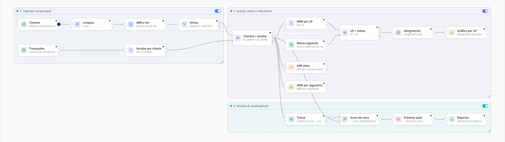
O PRO.DATA é um programa para quem trabalha com dados no dia a dia — analistas, controladoria, comercial, operações — e quer sair da planilha frágil sem precisar virar programador.
Em vez de fórmulas espalhadas por várias abas, você monta um fluxo: caixas ligadas por linhas, em que cada caixa faz uma coisa (ler um arquivo, limpar, filtrar, juntar, calcular, resumir, gerar um gráfico). O fluxo fica salvo, pode ser executado de novo com dados novos em segundos e mostra o resultado de cada etapa, então dá para ver exatamente de onde veio cada número.
Que hoje cruzam planilhas manualmente todo mês e querem automatizar sem depender de TI.
Que precisam de uma ferramenta visual para prototipar e documentar transformações rapidamente.
Que querem indicadores confiáveis e rastreáveis, do arquivo de origem até o gráfico.
Seis motivos práticos, do primeiro arquivo ao dashboard.
Arraste ferramentas, ligue as caixas e configure por listas e formulários. As colunas aparecem para escolher — nada de digitar nomes e errar.
Motor colunar moderno (Polars e DuckDB). O fluxo de demonstração inteiro roda em meio segundo; reexecutar sem mudanças leva milissegundos, porque só o que mudou é recalculado.
CSV com ponto e vírgula, vírgula decimal e acentos de sistemas antigos (Windows-1252) são reconhecidos sozinhos. Abre e funciona.
Tudo roda no seu computador, sem nuvem e sem internet. Senhas de banco ficam no cofre do Windows. Conexões com banco são somente leitura.
Indicadores e gráficos nascem dentro do próprio fluxo e se atualizam a cada execução. Sem exportar para outra ferramenta.
Clique em qualquer caixa e veja os dados que saíram dela, com perfil de qualidade de cada coluna. Erros aparecem na própria caixa, com o motivo.
Uma tela só, dividida em áreas com papéis claros. Todos os painéis podem ser movidos ou ocultados (veja o capítulo 9).
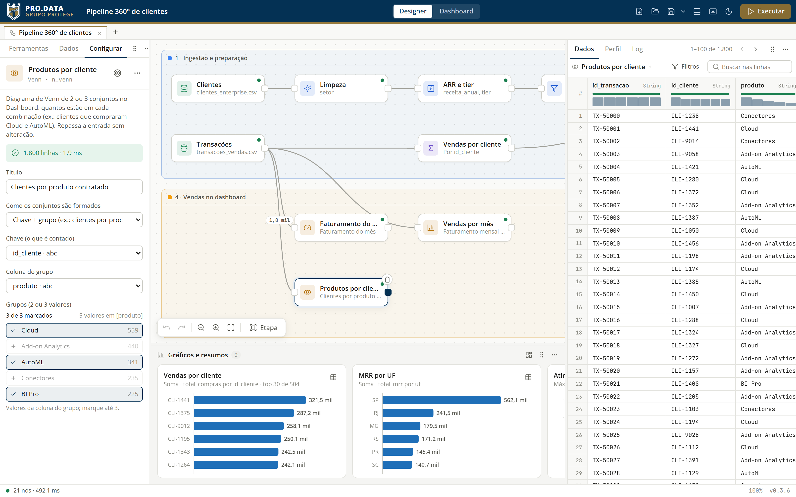
1 2 3 4 5 6Do arquivo bruto ao indicador pronto para a reunião.
Arraste um arquivo (CSV, Excel, Parquet, JSON) para a aba Dados ou crie ali uma consulta a um banco PostgreSQL ou SQL Server. O PRO.DATA mostra uma prévia e detecta formato, separadores e acentos sozinho.
Arraste ferramentas para o canvas e ligue umas às outras: limpar, filtrar, calcular colunas, juntar tabelas, resumir. Soltar uma caixa em cima de uma ligação existente a encaixa no meio automaticamente.
Ao clicar numa caixa, a aba Configurar abre com um formulário próprio dela. Colunas aparecem em listas; expressões são validadas enquanto você digita.
Clique em Executar. Cada caixa ganha um indicador de status e mostra o número de linhas. Clique em qualquer saída para ver os dados que passaram por ali.
Caixas de BI publicam indicadores e gráficos no Dashboard, onde você monta a página do seu jeito e baixa a imagem para o e-mail ou a apresentação. No mês seguinte, basta trocar o arquivo e executar de novo.
Envie arquivos pela aba Dados (clicando ou arrastando) ou solte-os direto no canvas. Antes de usar, a prévia mostra o que foi detectado e as primeiras linhas — e qualquer ajuste aparece na hora.
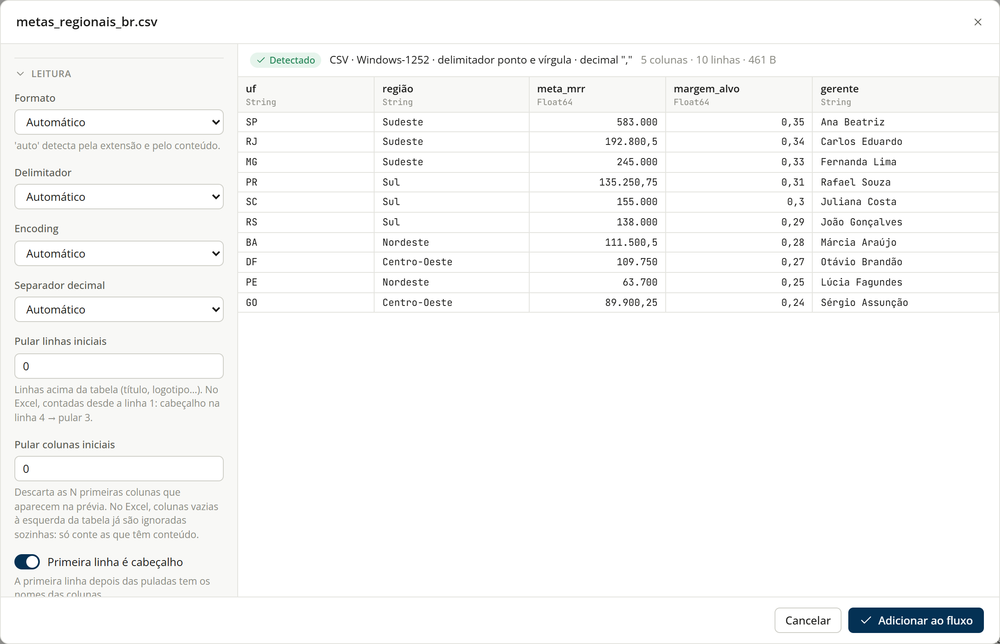
| Formato | Detalhes |
|---|---|
| CSV / TXT / TSV | Detecta separador (, ; tabulação |), codificação (UTF-8, Windows-1252, ISO-8859-1) e separador decimal. Permite pular linhas, definir valores nulos e cabeçalho. |
| Excel | .xlsx, .xls, .xlsm, com escolha da aba. |
| Parquet · Arrow | Formatos analíticos de alto desempenho. |
| JSON · JSON Lines | Lista de registros ou um registro por linha (detectado automaticamente). |
| Tabela digitada | A ferramenta Text Input oferece uma grade para digitar ou colar do Excel (tabelas de-para, metas, parâmetros). |
Cadastre conexões com PostgreSQL e SQL Server e teste com um clique. Depois, na própria aba Dados, crie consultas de banco: escolha uma tabela da lista ou escreva o SQL, veja a prévia e dê um nome. A consulta fica ao lado dos arquivos e é usada exatamente como eles: arraste para o canvas ou escolha no Input Data, a mesma ferramenta que lê arquivos.
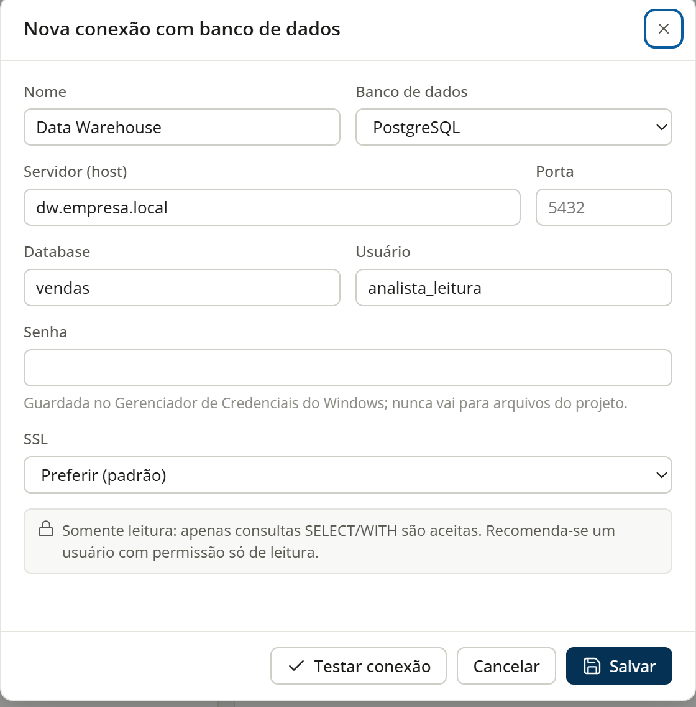
SELECT/WITH) são aceitas, e comandos que alteram dados são recusados antes de chegar ao banco. Por padrão, cada execução consulta o banco de novo; a opção "Reaproveitar resultado" evita consultas repetidas quando os dados não mudam.28 ferramentas em cinco famílias. Algumas têm mais de uma saída — por exemplo, o Filter separa o que atende à condição (T) do que não atende (F), e o Join separa o que só existe à esquerda (L), o que casou (J) e o que só existe à direita (R).
| Ferramenta | Para que serve |
|---|---|
| Entrada e saída | |
| Input Data | Lê qualquer fonte da aba Dados: arquivos (com detecção automática de formato) ou consultas de banco. |
| Text Input | Tabela pequena digitada ou colada (de-para, metas). |
| Browse | Ponto de inspeção para conferir os dados no meio do fluxo. |
| Output Data | Exporta para Excel (padrão, com o nome da planilha; vários Output Data podem montar um arquivo com várias planilhas), CSV, Parquet, JSON ou Arrow, na pasta que você escolher. |
| Preparação | |
| Select | Escolhe, renomeia e muda o tipo das colunas. |
| Filter | Separa linhas por condição, com modo simples ou expressão. |
| Formula | Cria colunas calculadas ou altera colunas existentes (SE/ENTÃO, texto, matemática, datas). |
| Data Cleansing | Remove espaços, padroniza maiúsculas e trata vazios em um passo. |
| Unique | Separa a primeira ocorrência de cada chave das duplicadas. |
| Sort · Sample | Ordena; tira amostras (primeiras, últimas, aleatórias, percentual). |
| Text To Columns | Divide um texto por um separador em novas colunas ou linhas (ex.: "SP - São Paulo"). |
| Record ID · Running Total | Numera as linhas; calcula soma acumulada, recomeçando a cada grupo se quiser. |
| Combinar e transformar | |
| Join | Cruza duas tabelas por uma ou mais chaves, com saídas L, J e R. O Configurar mostra quantas linhas saem em cada uma. |
| Summarize | Agrupa e calcula soma, média, mediana, contagens, mínimo e máximo. |
| Union | Empilha tabelas, alinhando colunas pelo nome ou posição. |
| Cross Tab · Transpose | Tabela dinâmica (valores de uma coluna viram colunas) e o inverso (colunas viram linhas). O Configurar desenha o antes e o depois com os seus dados. |
| Append Fields | Anexa uma tabela pequena (parâmetros, taxa do mês) a todas as linhas. |
| SQL | Para quem conhece SQL: consulta livre sobre os dados do fluxo. |
| BI e indicadores | |
| Chart | Colunas, barras, linha, rosca, empilhado, agrupado, 100%, área, Pareto, funil e dispersão. |
| KPI Card | Big number com variação contra meta ou período anterior e tendência, ou medidor. |
| Venn · Table | Interseções de 2 ou 3 grupos (ex.: clientes por produto) e tabela com totais e cores por faixa. |
| Machine Learning | |
| Train/Test Split | Divide os dados em treino e teste. |
| Model Trainer · Predictor | Treina modelos de classificação ou regressão e aplica a novos dados, com acurácia medida em dados de validação. |
Clique na caixa e a aba Configurar abre ao lado, com um formulário só dela. Na direita, a tabela já mostra o resultado — no exemplo, as três saídas do Join com a contagem de cada uma.
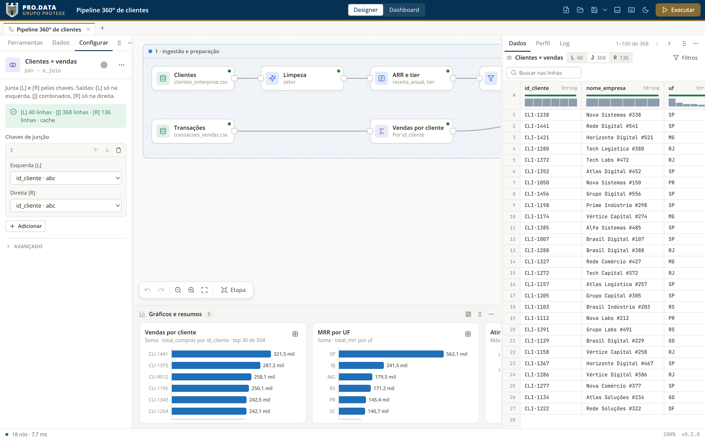
Cross Tab, Transpose e Join são conceitos que confundem quem não trabalha com dados todo dia. No Configurar, essas caixas mostram um esquema do que acontece com a tabela, montado com as colunas escolhidas e uma amostra dos seus dados. Passar o mouse num valor destaca para onde ele vai; no Join, clicar em L, J ou R abre aquelas linhas.
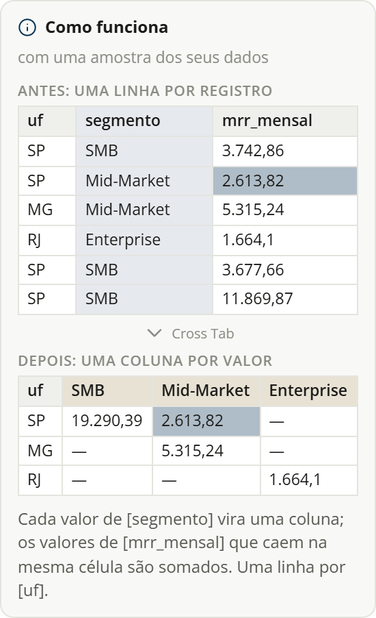
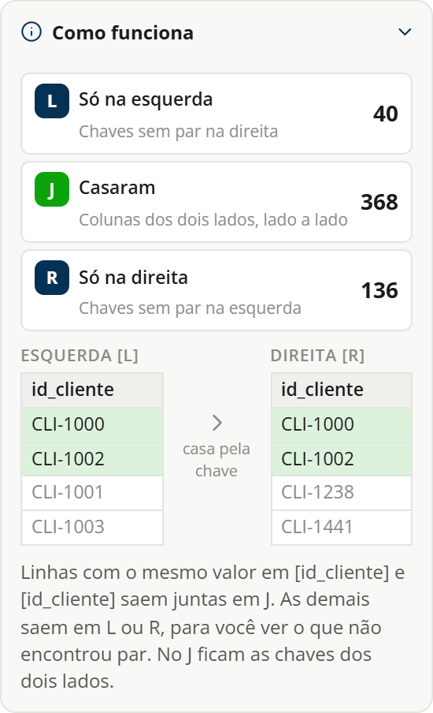
As caixas Formula e Filter têm um editor feito para quem não programa:
[ e ele lista as colunas. Enter aceita; Ctrl+Espaço mostra tudo.!=. Para juntar textos use Concat.ToNumberBR('1.234,56'), FormatNumber([valor], 2) → 1.234,56, DigitsOnly para CPF e CNPJ, RemoveAccents, e datas em português: DateAdd([data], 1, 'mês'), MonthName, WeekdayName.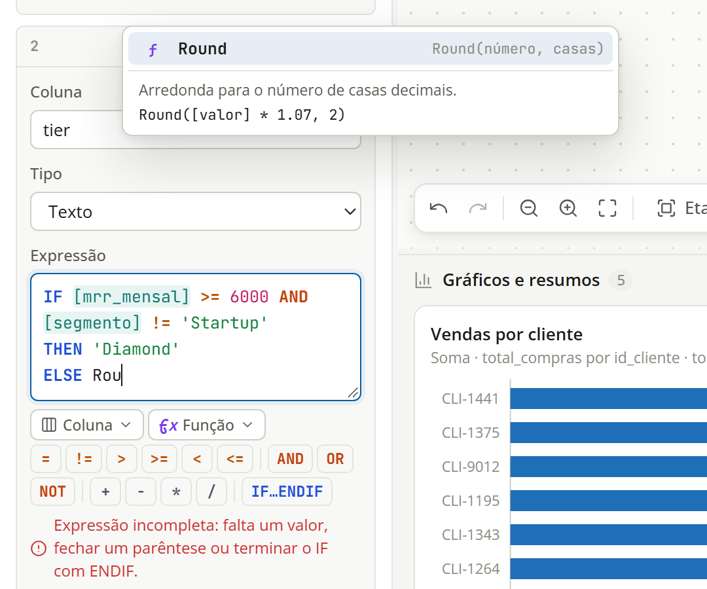
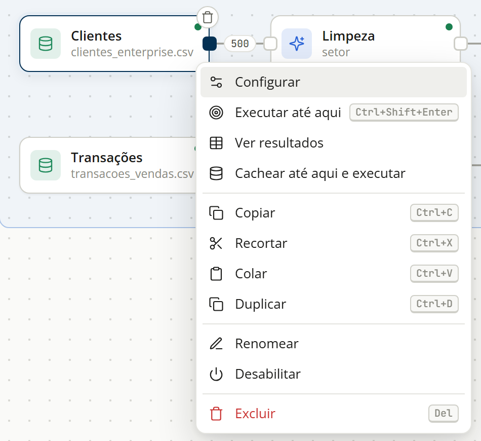
Cada caixa guarda o resultado da última execução. Clique nela — ou em uma de suas saídas — e a tabela mostra os dados correspondentes.
Para investigar sem mexer no fluxo, use o botão Filtros da tabela, o funil no cabeçalho de cada coluna ou o botão direito sobre uma célula ("Filtrar = valor", "Excluir valor").
As condições viram etiquetas que você edita ou remove, e o contador mostra quantas linhas sobraram. Esses filtros não alteram o fluxo salvo.
A aba Perfil descreve cada coluna: percentual preenchido, vazio e nulo, valores distintos, mais frequentes e estatísticas (mínimo, média, mediana, máximo).
Com filtros ativos, o perfil considera só as linhas filtradas — ótimo para comparar grupos.
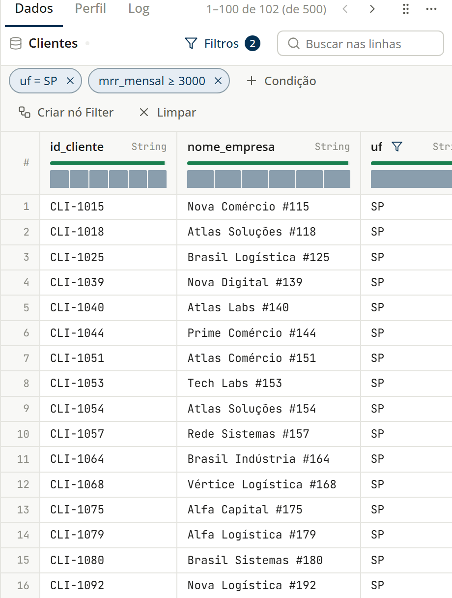
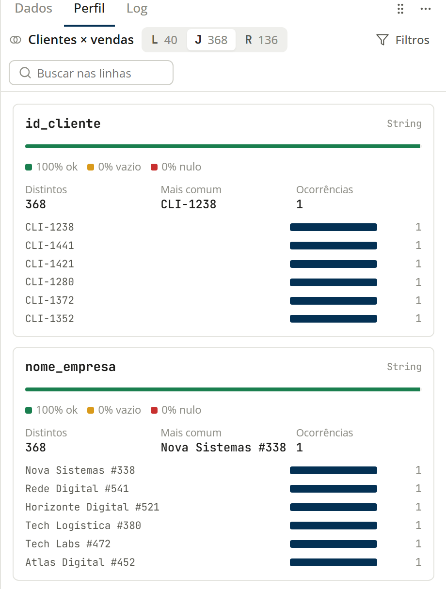
Os números nascem dentro do fluxo: as caixas de BI calculam e o Dashboard mostra. Quando os dados mudam, basta executar de novo.
| Caixa | O que publica |
|---|---|
| KPI Card | Um número em destaque (soma, média, contagem…). Opcionalmente compara com uma meta ou com o período anterior (dia, semana, mês, trimestre ou ano), mostrando a variação com seta verde ou vermelha conforme "maior é melhor" ou "menor é melhor", e um minigráfico da tendência. Também pode virar um medidor. |
| Chart | Colunas, barras, linha e rosca; com uma 2ª dimensão, colunas empilhadas, agrupadas ou 100%, várias linhas e áreas; e ainda Pareto, funil e dispersão. |
| Venn | Quantos estão em cada combinação de 2 ou 3 grupos — por exemplo, clientes que compraram Cloud, AutoML ou os dois. |
| Table | Uma tabela com as colunas escolhidas, ordenação, linha de totais e cores por faixa de valor. |
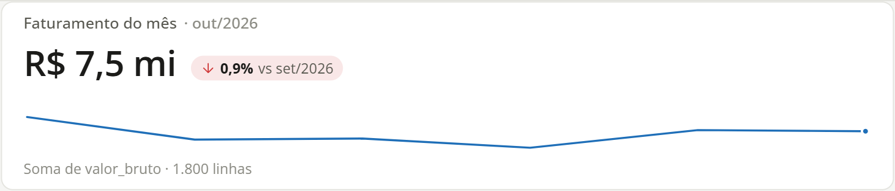
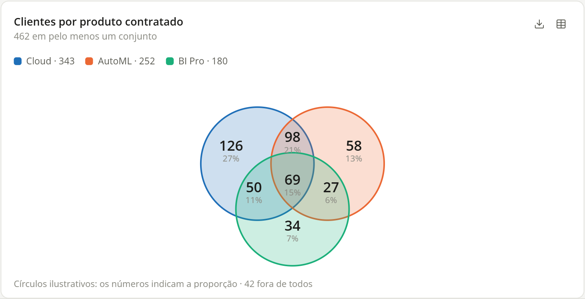
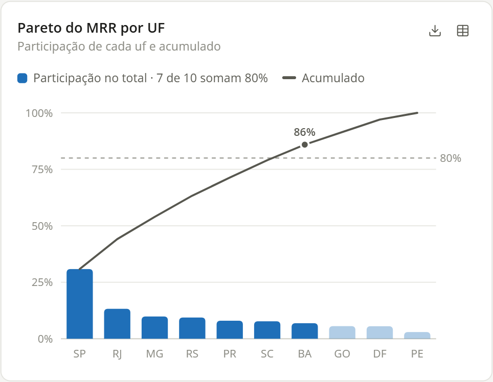
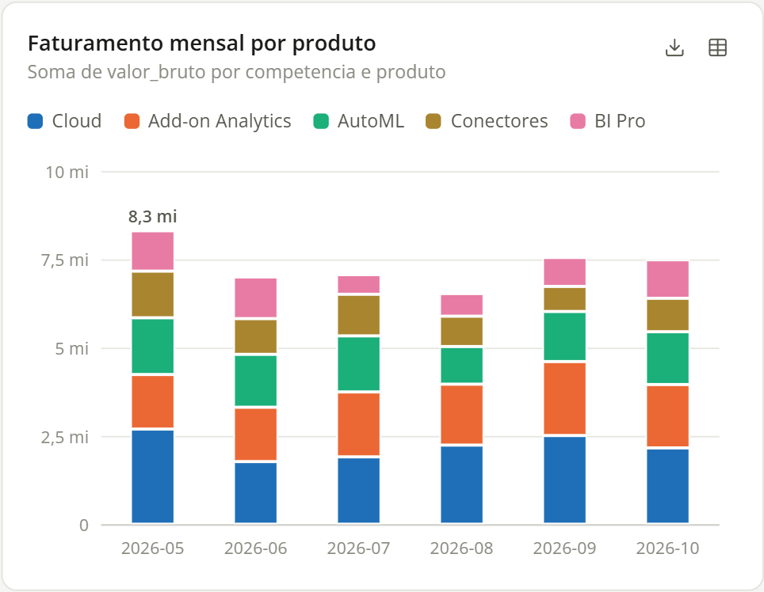
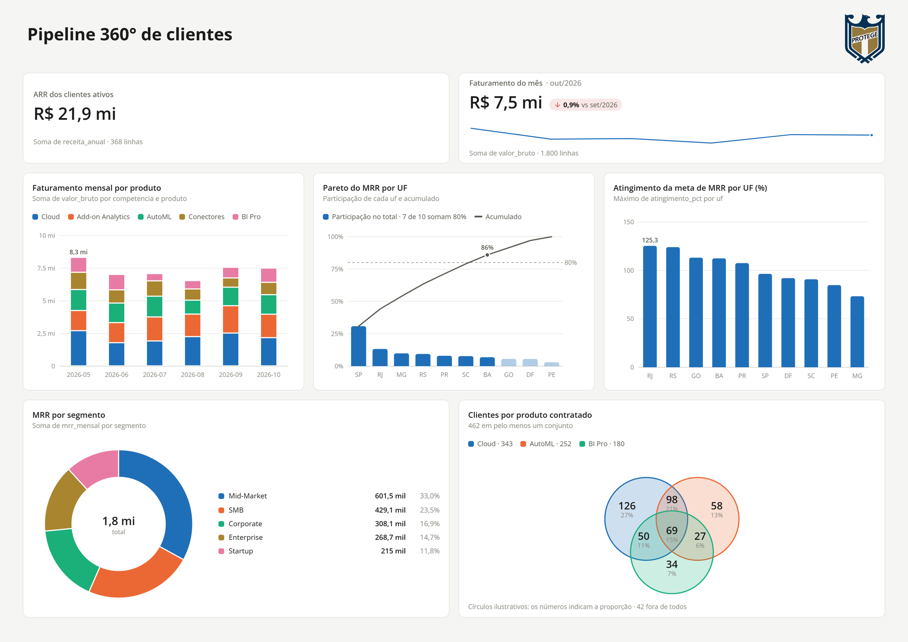
O fluxo define o que mostrar; o dashboard define onde e como. Mudar cores ou posições não executa nada de novo.
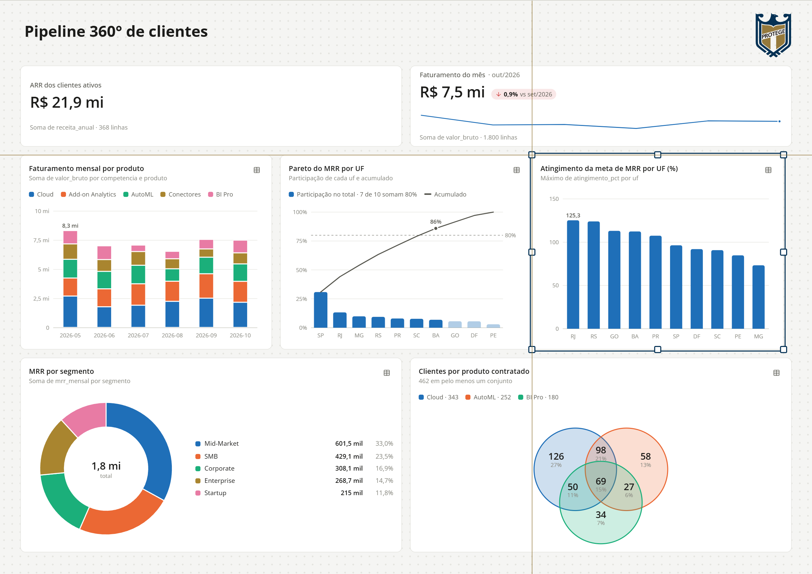
Clique em Editar layout. A página vira um canvas: arraste os visuais, redimensione pelas alças e eles se encaixam numa grade, com guias quando se alinham a outro item ou ao centro da página (segure Alt para posicionar livremente). Shift+arrastar seleciona vários; o botão direito alinha, distribui e muda a camada; Delete tira o visual da página sem apagar a caixa do fluxo — ele fica em Fora da página e volta com um clique.
Título (empurra o conteúdo para baixo), texto, imagem PNG/JPG/SVG até 1 MB, o logo do Grupo Protege, retângulos de fundo e linhas divisórias.
16:9, A4 paisagem, A4 retrato ou altura livre, com cor de fundo. Se os visuais não couberem, a página cresce e o PRO.DATA avisa.
Gera um PNG em alta resolução da página — ou de um visual só, pelo botão do cartão — no tema claro ou escuro que estiver na tela.
O botão Organizar mostra os seus visuais em seis arranjos — Automático, KPIs no topo com 2 ou 3 colunas, Destaque, KPIs na lateral e Relatório — e aplica o escolhido.
Textos, imagens e o que não estiver selecionado ficam onde estão; um Ctrl+Z desfaz.
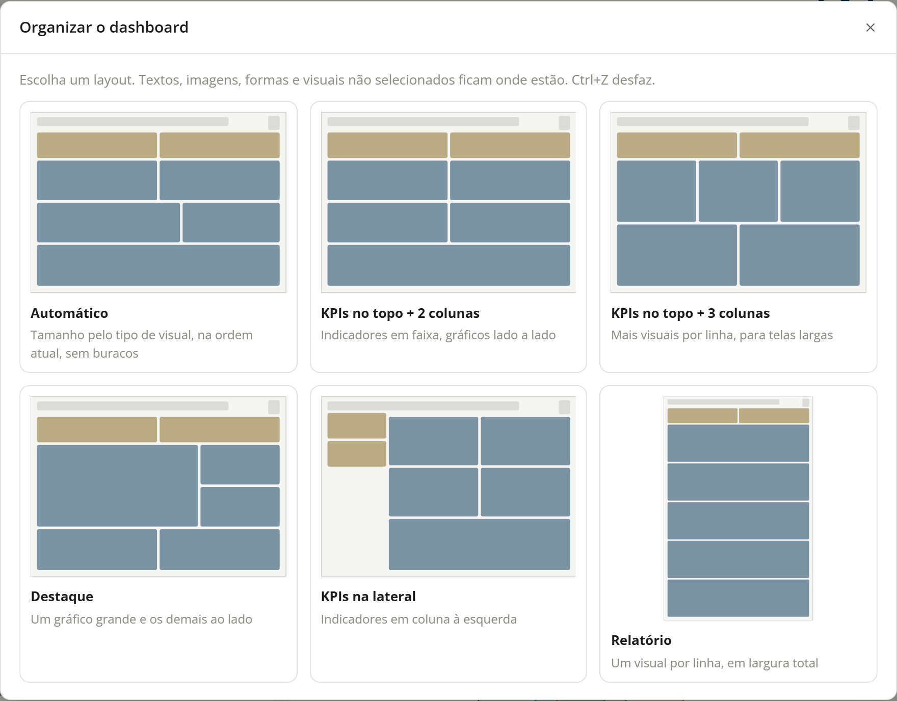
Com um item selecionado, o painel Formato ajusta título, subtítulo, fundo, borda, cantos e sombra; os nomes na legenda e nas categorias (ex.: SP → São Paulo) e a posição da legenda; cores (paleta da marca, paleta alternativa, uma cor ou uma cor por categoria — com aviso quando a cor some no fundo); rótulos de dados, formato dos números, legenda e eixos; e, em tabelas e KPIs, cores por faixa (bom, atenção, crítico, sempre com ícone).
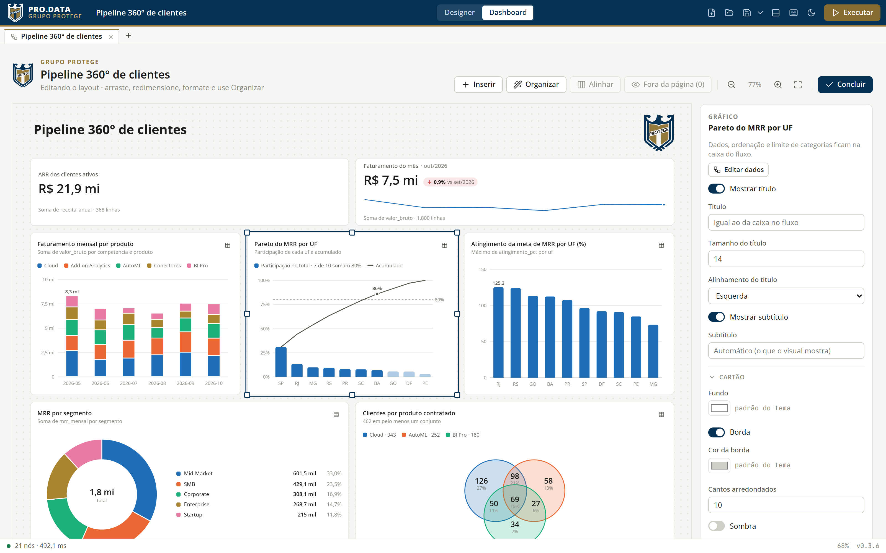
Agrupe as etapas do fluxo em caixas com nome, descrição e cor (paleta Organização, botão Etapa ou tecla G). Arrastar o título move a caixa junto com tudo o que está dentro. Cada caixa tem um interruptor: desligada, as caixas de dentro deixam de executar — útil para pausar uma parte do processo sem apagar nada.
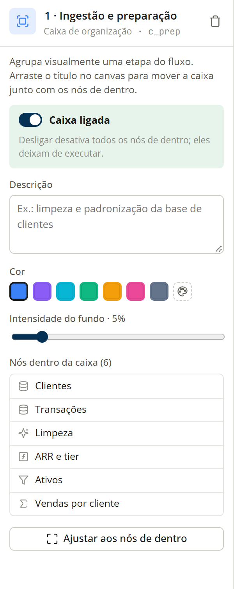
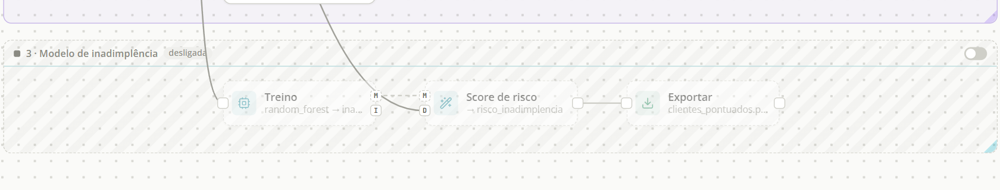
Os três painéis — ferramentas/configuração, resultados e gráficos — podem ser arrastados pela alça ⠿ para a esquerda, a direita ou embaixo, ou ocultados. O botão Painéis, na barra superior, reexibe e restaura o padrão. O arranjo é lembrado.
Telas menores: os painéis encolhem na proporção da janela e a interface fica compacta sozinha em monitores menores (largura abaixo de 1440 ou altura abaixo de 800). No menu Painéis dá para fixar a densidade: Automática, Confortável ou Compacta.
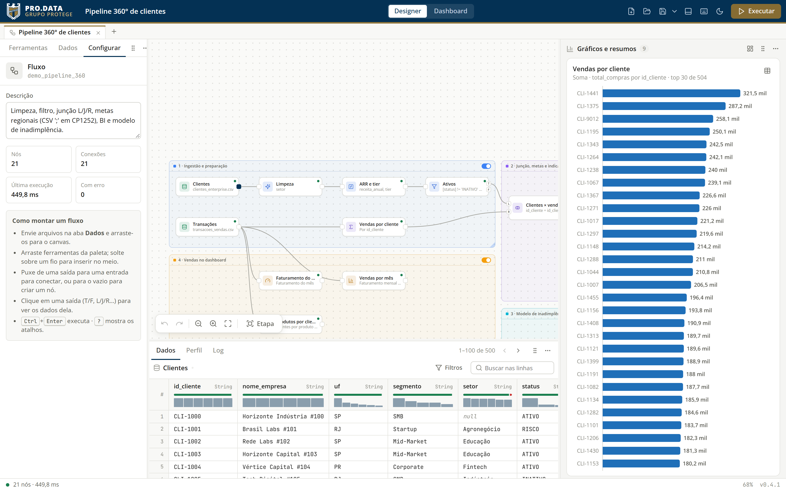
Cada fluxo aberto ganha uma aba logo abaixo da barra superior, com seu próprio resultado e seu próprio desfazer. Um ponto laranja indica alterações não salvas. Ao fechar uma aba — ou o programa — com alterações, o PRO.DATA pergunta: Salvar, Não salvar ou Cancelar. As abas salvas reabrem sozinhas na próxima vez.
Salvar guarda o fluxo na biblioteca do PRO.DATA. Salvar como… (Ctrl+Shift+S) grava um arquivo .prodata.json na pasta que você escolher — do projeto, da rede ou do OneDrive — e daí em diante Ctrl+S salva nele. Abrir arquivo… abre fluxos de qualquer pasta, e os recentes ficam listados. No Output Data, o campo Pasta de destino abre o seletor de pastas do Windows; depois de executar, o botão "Mostrar na pasta" leva até o arquivo gerado.
Consultas a banco e arquivos grandes não precisam ser lidos a cada ajuste. Clique com o botão direito numa caixa e escolha Cachear até aqui e executar: só o resultado dela fica guardado (inclusive depois de fechar o programa), e por isso as caixas anteriores deixam de executar — aparecem douradas e tracejadas, com "Pulada pelo cache", e a barra de status conta quantas foram puladas. O aviso da caixa lista as puladas e tem o botão Mostrar as puladas. Mudou algo antes do ponto? O cache se refaz sozinho. Para forçar uma nova leitura, use Atualizar cache.
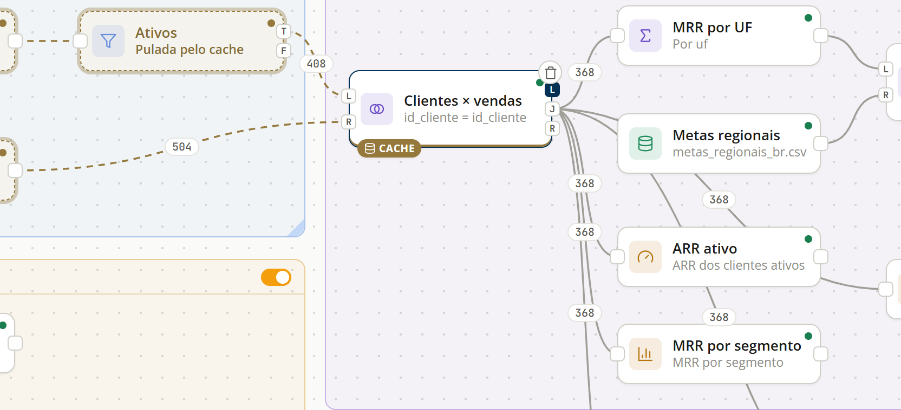
Também disponíveis: tema claro e escuro, desfazer/refazer, zoom e "ajustar à tela".
O PRO.DATA roda inteiramente no seu computador. Nenhum dado é enviado para a internet; o programa funciona offline.
Senhas de banco ficam no Gerenciador de Credenciais do Windows, criptografadas pelo sistema. Nunca aparecem em arquivos, fluxos ou mensagens de erro.
Comandos que alteram dados (DELETE, UPDATE, DROP…) são recusados antes de chegar ao banco. No PostgreSQL, a sessão é aberta em modo somente leitura.
Fora da pasta de dados, o programa só grava onde você mandar: na pasta escolhida no Output Data ou no fluxo que você salvar. Nomes de arquivo maliciosos são neutralizados.
Fluxos, arquivos e conexões ficam em %LOCALAPPDATA%\PRO.DATA e sobrevivem a atualizações e à desinstalação.
Fluxos são salvos em JSON legível — dá para versionar, revisar e auditar cada regra aplicada aos dados.
PRO.DATA-0.3.6-setup.exe (137 MB). Instala só para o seu usuário, sem pedir administrador, cria atalho no Menu Iniciar e aparece em Aplicativos para desinstalar.
PRO.DATA-0.3.6-portable.zip (219 MB). Descompacte e abra PRO.DATA.exe. Nada é instalado — ideal para testar.
| Item | Requisito |
|---|---|
| Sistema | Windows 10 ou 11, 64 bits. |
| Componentes | WebView2 e .NET Framework 4.x — já presentes no Windows 11 e no Windows 10 atualizado. Não é preciso instalar Python. |
| Espaço em disco | Cerca de 600 MB para o programa, mais o tamanho dos seus dados. |
| Memória | Os dados são processados em memória: reserve RAM compatível com o tamanho das suas tabelas (como regra prática, 3 a 5 vezes o tamanho dos arquivos). |
Pelo Menu Iniciar ou pelo atalho. Na primeira vez o Windows pode exibir "Editor desconhecido" (veja o capítulo 12): clique em Mais informações → Executar assim mesmo.
O fluxo de demonstração já vem pronto e executado. Clique nas caixas, abra o Dashboard, experimente os filtros.
Botão Novo fluxo, envie um arquivo na aba Dados e arraste-o para o canvas.
O que esta versão faz, o que não faz e onde ela tem limites — para você decidir com clareza.
| Limitação | O que significa na prática |
|---|---|
| Volume de dados | As tabelas são carregadas inteiras na memória do computador. O limite prático depende da RAM disponível; bases muito grandes (dezenas de milhões de linhas) ainda não foram validadas e podem exigir uma máquina com mais memória. |
| Modelos de ML | Ficam em memória e são treinados novamente quando o programa é reaberto (sem impacto no resultado, só no tempo da primeira execução). |
| Aviso do Windows | O instalador ainda não é assinado digitalmente; por isso o SmartScreen mostra "Editor desconhecido" na primeira execução. |
| Visuais com muitos dados | A dispersão desenha uma amostra fixa de até 2.000 pontos (e avisa no rodapé); gráficos mostram até 50 categorias e 8 séries, somando o restante em "Outros". No Venn de 3 grupos os círculos são ilustrativos — os números trazem a proporção. |
| Filtros exploratórios | São lembrados enquanto o programa está aberto e não são salvos com o fluxo (por definição, são exploração; use "Criar nó Filter" para torná-los permanentes). |
| Atalho | Ação |
|---|---|
| Ctrl+Enter | Executar o fluxo (com Shift: só até a caixa selecionada) |
| Ctrl+S · Ctrl+Shift+S · Ctrl+O | Salvar · salvar como · abrir fluxo |
| Ctrl+C · Ctrl+X · Ctrl+V | Copiar · recortar · colar caixa ou etapa |
| Ctrl+Z · Ctrl+Shift+Z | Desfazer · refazer |
| Ctrl+D · Delete | Duplicar · excluir a seleção |
| G · F | Nova caixa de organização · ajustar à tela |
| Shift+clique · Ctrl+A · ? | Selecionar várias caixas · todas · lista de atalhos |
| Ctrl+Espaço | Sugestões no editor de fórmulas |
| Duplo clique no canvas | Adicionar ferramenta no ponto clicado |
| Dashboard, modo Editar: setas · Shift+setas | Mover a seleção 1 px · 8 px (Alt ao arrastar solta o encaixe) |
| Dashboard, modo Editar: Ctrl+C/V/D · Delete | Copiar, colar, duplicar textos e imagens · tirar da página |
Não. Tudo é feito por arrastar, ligar e preencher formulários. Quem conhece SQL ou fórmulas tem recursos extras, mas eles são opcionais.
Não. O PRO.DATA roda só no seu computador e funciona sem internet.
Não. As conexões são somente leitura; comandos que alteram dados são bloqueados.
Envie o arquivo novo com o mesmo nome (o PRO.DATA pergunta se deve substituir) e clique em Executar. O fluxo inteiro roda de novo com os dados atualizados.
A caixa com problema fica vermelha e explica o motivo na aba Configurar; as caixas seguintes aparecem como "não executado". A aba Log lista tudo. Se o programa não abrir, o registro fica em %LOCALAPPDATA%\PRO.DATA\logs.
Sim. Use Salvar como… e escolha a pasta (rede, OneDrive, projeto). O arquivo é um JSON legível; quem abrir em outro computador precisa ter os mesmos arquivos e consultas na aba Dados.
No Dashboard, clique em Baixar imagem: o PNG sai em alta resolução, pronto para colar no e-mail ou na apresentação. O layout fica salvo no arquivo do fluxo.
Não. Fluxos, arquivos e conexões ficam na sua pasta de dados e continuam lá para uma futura reinstalação.